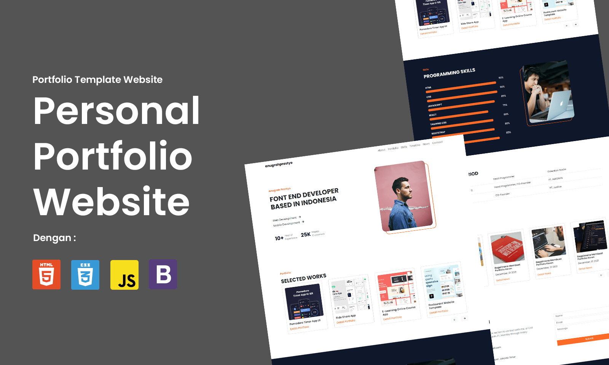

Case Study Portfolio - Personal Portfolio
Date Created
November 2022
My Role
Front-end Web Developer
Project Type
Web Development
Project Type
Web Development

About Portfolio
Portfolio is a website that provide data of recommended restaurant all around Indonesia (Nusantara). In this website user can find recommended restaurant, add restaurant to favorite, post and see review from other user, and many more.
This website was created to fulfill the submission class 'Becoming a Front-End Web Developer Expert' by Dicoding Indonesia, This website developed using HTML, CSS, JavaScript, SASS, and Webpack, fetching API from restaurant-api.dicoding.dev to get restaurant data and displaying it. Using Webpack as a Module Bundler
Goals
- Provide Restaurant Data
- User can save restaurant into Favorite
- Can be accessed offline (PWA)
Tech Stack
HTML

CSS

JavaScript
Bootstrap
Tech Stack
Portfolio Preview